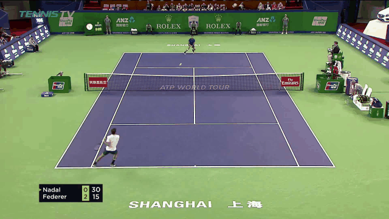

A sub-50K architecture preserves high-resolution cues across three sports.
ICASSP 2027 Submission
LiteBallNet: A Lightweight Multi-Frame Ball Detector for Cross-Sport Edge Deployment
1 School of Artificial Intelligence, Shenzhen Technology University, Shenzhen, China
Supported by the Natural Science Foundation of Top Talent of SZTU (Grant No. GDRC202411).
45,644parameters
1.876GMAC
86.30FPS · RTX 3060 Laptop
37.0 msRK3588 RKNN · ≈30 FPS
Paper overview
Abstract
Vision-based tiny-ball tracking underpins automated officiating and fine-grained tactical analysis. However, deployment on embedded platforms remains difficult: lightweight networks often lose spatial detail, whereas high-capacity trackers exceed practical memory and computation budgets. To reconcile localization accuracy with edge efficiency, we propose LiteBallNet, a unified multi-frame heatmap network for cross-sport tiny-ball detection. Depthwise separable convolutions reduce computation, limited spatial reduction and U-Net skip fusion preserve fine-grained target cues, and bottleneck Coordinate Attention strengthens direction-sensitive localization. We further introduce structured hard-negative supervision to suppress recurrent court-like heatmap peaks during training without adding inference overhead. Across three public benchmarks, LiteBallNet achieves state-of-the-art F1-score on the evaluated table-tennis benchmark and competitive accuracy on badminton and tennis with only 45,644 parameters. It also sustains real-time inference on both a desktop GPU and an RKNN-deployed edge NPU, establishing a strong accuracy–capacity operating point for portable cross-sport ball tracking.
Coordinate Attention strengthens weak targets while hard-negative supervision suppresses false peaks.
At least 0.93 F1 across all three sports with real-time GPU and RK3588 NPU inference.
Method
Network architecture
Three consecutive RGB frames are concatenated into a nine-channel input. A shallow depthwise-separable U-Net limits spatial reduction to one-quarter resolution, Coordinate Attention reweights the bottleneck, and the hard-negative branch is used only during training.

Frames It, It−1, and It−2 are resized to 360 × 640 and concatenated.
Two stride-2 stages and full-resolution skip fusion preserve tiny-target evidence.
Axis-specific height and width gates retain position-aware long-range context.
Structured distractor masks penalize recurrent false peaks without changing inference.
Protocol. The architecture is shared across sports, with one checkpoint trained per sport. A prediction is correct when its distance from the ground-truth centre is within 4 pixels.
Qualitative demos
Cross-sport tracking outputs
Representative project-page clips show the model output on tennis, badminton, and table tennis. Each benchmark uses the same architecture with a separately trained checkpoint.

The video could not be loaded. The representative frame is shown instead.
Tracking demonstrations. Representative output sequences across the three evaluated sports.
Experiments
Accuracy, capacity, and latency
All values below follow the four-page ICASSP manuscript. The main comparison uses 360 × 640 input; dagger-marked FPS values were measured on the same RTX 3060 Laptop.

| Method | Params | FPS† | Badminton | Table Tennis | Tennis | |||||||||
|---|---|---|---|---|---|---|---|---|---|---|---|---|---|---|
| Acc. | Prec. | Rec. | F1 | Acc. | Prec. | Rec. | F1 | Acc. | Prec. | Rec. | F1 | |||
| TrackNetV1 | 43.2M | 16.23 | .8395 | .9653 | .8364 | .8962 | .7876 | .9903 | .7814 | .8735 | .7901 | .9336 | .8301 | .8788 |
| TrackNetV2 | 43.3M | 47.03 | .8644 | .9672 | .8657 | .9136 | .8640 | .9786 | .8729 | .9228 | .8124 | .9596 | .8356 | .8933 |
| MonoTrack | 11.07M | 30.56 | .8717 | .9709 | .8874 | .9273 | .8709 | .9488 | .9070 | .9274 | .8333 | .9349 | .8792 | .9062 |
| WASB | 5.7M | 19.92 | .8446 | .9469 | .8585 | .9006 | .8580 | .9678 | .8753 | .9192 | .8752 | .9819 | .8857 | .9313 |
| MMFNet | 58.1M | 14.99 | .9150 | .9542 | .9422 | .9482 | .9178 | .9857 | .9255 | .9547 | .9040 | .9240 | .9757 | .9492 |
| TrackNetV3 | 43.3M | 46.31 | .9146 | .9882 | .9089 | .9469 | .9167 | .9829 | .9269 | .9541 | .8977 | .9775 | .9133 | .9443 |
| TOTNet | 8.7M | 6.73 | .8899 | .9549 | .9092 | .9315 | .9010 | .9680 | .9231 | .9450 | .8938 | .9648 | .9203 | .9420 |
| TrackNetV4 | 43.3M | 32.13 | .9203 | .9726 | .9303 | .9510 | .9212 | .9802 | .9344 | .9567 | .9063 | .9760 | .9237 | .9491 |
| BlurBall | 5.7M | 17.26 | .8539 | .9682 | .8518 | .9063 | .9234 | .9826 | .9344 | .9579 | .8893 | .9838 | .8989 | .9394 |
| TrackNetV6 | 58.0M | — | .9414 | .9750 | .9540 | .9644 | .9517 | .9822 | .9659 | .9739 | .9384 | .9526 | .9833 | .9677 |
| LiteBallNet (Ours) | 45,644 | 86.30 | .9267 | .9602 | .9129 | .9361 | .9849 | .9794 | .9924 | .9859 | .9544 | .9494 | .9540 | .9517 |
26 training / 3 test matches
5 training / 7 test matches
7 training / 3 test matches
| Setting | CA | HN | Badminton | Table Tennis | Tennis | Average |
|---|---|---|---|---|---|---|
| Lightweight baseline | — | — | 0.9023 | 0.9531 | 0.9204 | 0.9253 |
| + Coordinate Attention | ✓ | — | 0.9356 | 0.9820 | 0.9480 | 0.9552 |
| + hard-negative objective | — | ✓ | 0.9234 | 0.9732 | 0.9394 | 0.9453 |
| Full proposed model | ✓ | ✓ | 0.9361 | 0.9859 | 0.9517 | 0.9579 |
Edge deployment
One inference graph, sport-specific checkpoints
The shared tensor interface allows sport-specific checkpoints to use one RKNN pipeline. Deployment to another supported sport requires checkpoint replacement rather than redesigning the inference graph.
- Model size
- 45,644 parameters
- Computation
- 1.876 GMAC
- RTX 3060 Laptop
- 86.30 FPS
- RK3588 NPU · RKNN
- 37.0 ms · approximately 30 FPS
- TrackNetV2 prototype on RK3588
- about 1 FPS
Reported values are model-inference measurements; end-to-end camera, decoding, and display latency is not claimed.
RK3588 NPU deployment demonstrations
On-device RKNN inference across badminton, table tennis, and tennis. The overlays report the measured model-inference throughput rather than end-to-end camera-to-display latency.
Resources
Paper and contact
Paper
ICASSP 2027 manuscript
The public PDF link will be enabled after the release timing is confirmed.
Code
LiteBallNet repository
Source code, checkpoints, and deployment resources will be released after acceptance.
Contact
Corresponding authors
liqiang1@sztu.edu.cn · wangpeizheng@sztu.edu.cn